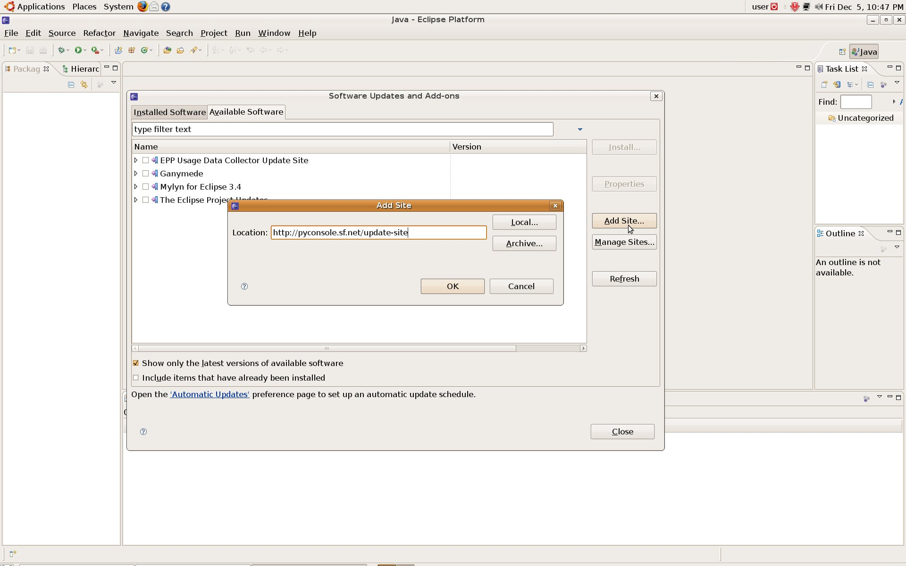
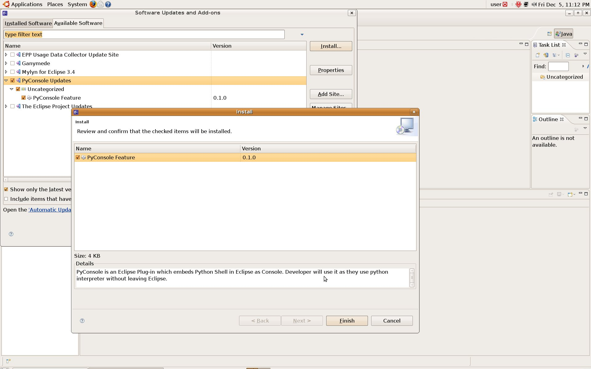
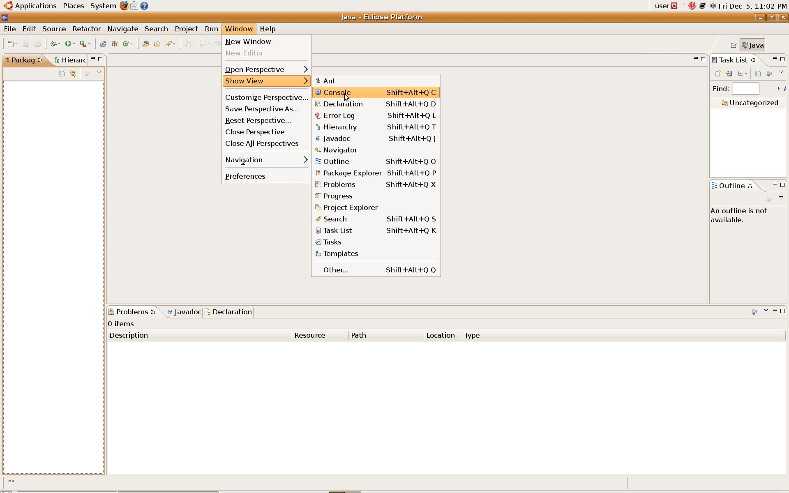
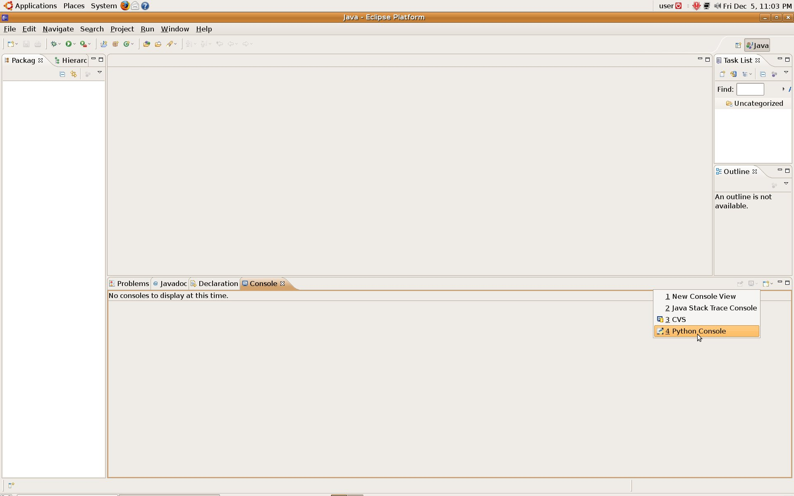
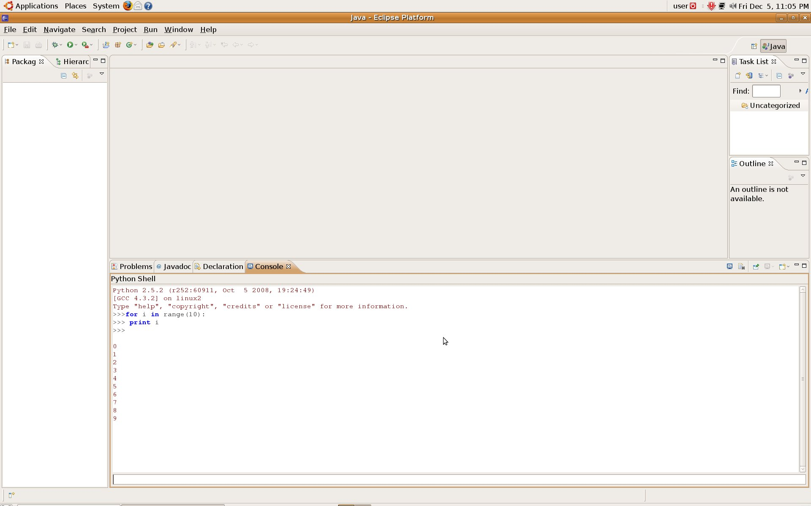
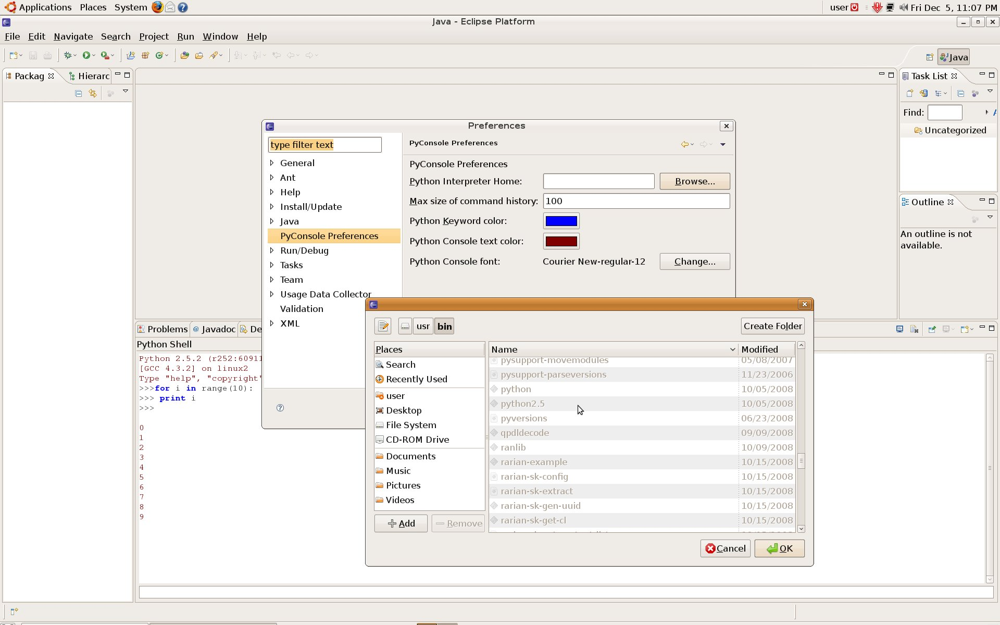

How to install and use PyConsole
Follow the steps below to install, configure and use PyConsole.
-
Add the update site

-
Install and Update from update site

-
Open the Eclipse Console view

-
Open PyConsole

-
Use PyConsole

-
Set the preferences
